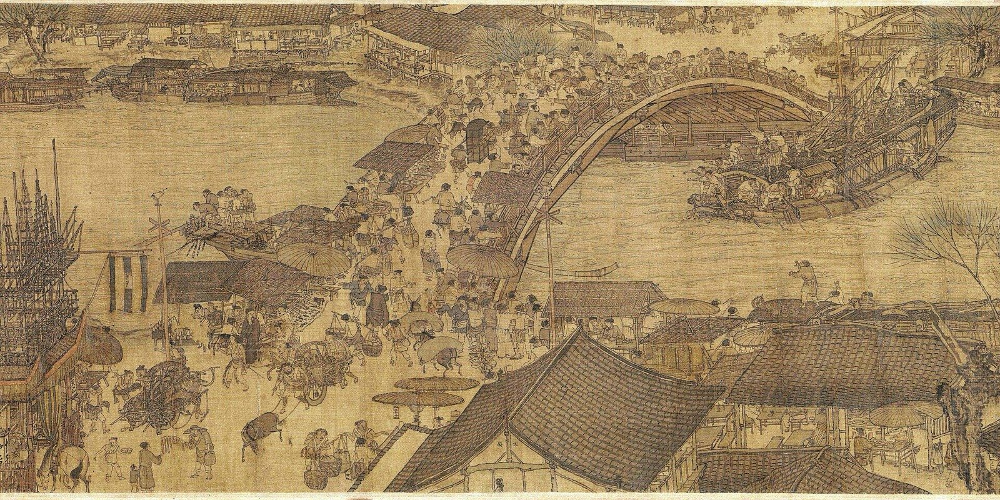

Along the River During the Qingming Festival 清明上河圖
Zhang Zeduan, Northern Song. Handscroll, ink and light color on silk, 24.8 × 528 cm. Palace Museum, Beijing.1

Scroll through the original
Palace Museum online gallery ↗
The museum's own site for the painting, with its image and a close look at the details.
故宫名画记 · Chinese
Song Scroll, Columbia ↗
Scroll from the countryside into the city with notes in English along the way.
Asia for Educators · English
Palace Museum catalog page ↗
The three sections (outskirts, the river and bridge, the city streets), more than 500 figures, and the colophons: 13 writers and 96 seals after the painting.1
故宫博物院 · Chinese
See it move
Later versions
Eight Qingming scrolls, Taipei ↗
The National Palace Museum holds eight scrolls on this subject, from Song to Qing, including the 1736 Qing court version by five court painters.2
National Palace Museum · English
The Ming version ↗
Attributed to Qiu Ying (1494–1552), probably made in a Suzhou workshop.3
Google Arts & Culture · English
Beside it
One Hundred Children at Play ↗
Southern Song album leaf in the tradition of Su Hanchen, ink and color on silk, 28.7 × 31.2 cm.4
Cleveland Museum of Art · English
Sources
- 张择端清明上河图卷, Palace Museum, Beijing.
- A Special Exhibition of Paintings on "Up the River During Qingming", National Palace Museum, Taipei.
- Up the River During Qingming, Qiu Ying, National Palace Museum on Google Arts & Culture.
- One Hundred Children at Play, Cleveland Museum of Art, 1961.261.